Lectures 28-30#
Today:
Finish Newton’s Method material
Start Python Unit 4 (image processing) 🎉
Future:
Next week is finals week. There is no final, or meeting time for next week – there will be office hours.
Analyzing Newton’s Method#
Let \(f(x) = x^3 - 2x + 2\). For each value of \(z\) in np.linspace(-2,2,1000), apply Newton’s method 7 times, and call the result results. For how many of these 1000 values do we have \(-0.001 < f(\text{results}) < 0.001\)?
Recall that \(f(\text{results})=0 \) if we end up with the true root, and \(f(\text{results}) \approx 0 \) if the result is almost a root.
import numpy as np
import matplotlib.pyplot as plt
import seaborn as sns
sns.set_style("darkgrid")
f = lambda x: x**3-2*x+2
df = lambda x: 3*x**2 - 2
newt = lambda z: z - f(z)/df(z)
Idea: Each row of arr will be the result of applying Newton’s method 7 times to a single point in np.linspace(-2,2,1000). “A row for each point”
z = np.linspace(-2,2,1000) #instead of one initial guess, we'll try every point on the interval [-2, 2].
reps = 7
arr = np.zeros((len(z),reps+1)) #columns are the iterations of newton's method, the rows represent each initial value (of which there are 1000)
arr[:,0] = z #same except for using the [:,0] instead of [0]
for i in range(reps):
arr[:,i+1] = newt(arr[:,i])
results = arr[:,-1] #last column holds the results, the final x-values from Newton's method
fig,ax = plt.subplots()
x = np.linspace(-2.5,2.5,1000)
ax.plot(x,f(x));

good_bool = np.abs(f(results)) < 0.001 #check the absolute value of the y-values from Newton's method
The length makes sense, because we have 1000 points.
good_bool.shape
(1000,)
Out of the 1000 input points, we see that 327 of them lead to a good estimate for a zero of \(f\).
good_bool.sum()
327
Let’s plot these points and see where they live. There’s a mistake here, we need the size of pts to match the size of the \(y\)-values. There’s a pretty easy fix for this.
fig,ax = plt.subplots()
x = np.linspace(-2.5,2.5,1000)
pts = z[good_bool]
ax.plot(x,f(x));
ax.plot(pts,0,'ko')
---------------------------------------------------------------------------
ValueError Traceback (most recent call last)
Cell In[9], line 5
3 pts = z[good_bool]
4 ax.plot(x,f(x));
----> 5 ax.plot(pts,0,'ko')
File C:\ProgramData\anaconda3\Lib\site-packages\matplotlib\axes\_axes.py:1779, in Axes.plot(self, scalex, scaley, data, *args, **kwargs)
1536 """
1537 Plot y versus x as lines and/or markers.
1538
(...)
1776 (``'green'``) or hex strings (``'#008000'``).
1777 """
1778 kwargs = cbook.normalize_kwargs(kwargs, mlines.Line2D)
-> 1779 lines = [*self._get_lines(self, *args, data=data, **kwargs)]
1780 for line in lines:
1781 self.add_line(line)
File C:\ProgramData\anaconda3\Lib\site-packages\matplotlib\axes\_base.py:296, in _process_plot_var_args.__call__(self, axes, data, *args, **kwargs)
294 this += args[0],
295 args = args[1:]
--> 296 yield from self._plot_args(
297 axes, this, kwargs, ambiguous_fmt_datakey=ambiguous_fmt_datakey)
File C:\ProgramData\anaconda3\Lib\site-packages\matplotlib\axes\_base.py:486, in _process_plot_var_args._plot_args(self, axes, tup, kwargs, return_kwargs, ambiguous_fmt_datakey)
483 axes.yaxis.update_units(y)
485 if x.shape[0] != y.shape[0]:
--> 486 raise ValueError(f"x and y must have same first dimension, but "
487 f"have shapes {x.shape} and {y.shape}")
488 if x.ndim > 2 or y.ndim > 2:
489 raise ValueError(f"x and y can be no greater than 2D, but have "
490 f"shapes {x.shape} and {y.shape}")
ValueError: x and y must have same first dimension, but have shapes (327,) and (1,)
fig,ax = plt.subplots()
x = np.linspace(-2.5,2.5,1000)
pts = z[good_bool]
ax.plot(x,f(x));
ax.plot(pts,np.zeros(len(pts)),'ko',markersize=2);

Let’s update this plot to now have the bad points in red.
fig,ax = plt.subplots()
x = np.linspace(-2.5,2.5,1000)
pts = z[good_bool]
pts2 = z[~good_bool]
ax.plot(x,f(x));
ax.plot(pts,np.zeros(len(pts)),'ko',markersize=2);
ax.plot(pts2,np.zeros(len(pts2)),'ro',markersize=0.5, alpha = 0.25); #smaller markers so the scattered black markers still show
#alpha determines the transparency of a point. alpha = 0 is totally invisible, and alpha = 1 is totally opaque.

Newton’s Method vs. Bisect Method: Timing and Tradeoffs#
#import numpy as np
def bisect(f, x0, x1, tol): #Almost the same code as in Matlab.
root = x0
while np.abs(f(root)) > tol: #when |f(root)| is large, we are far away from the x-axis.
root = (x0 + x1)/2
if f(x0)*f(root) < 0: #product is negative if and only if the individual values have opposite signs.
x1 = root #root is between x0 and root, so replace x1 with root
else:
x0 = root
return root
def newt_while(f, df, x0, tol): #modified to only take the very end result, and to keep running until we are a certain distance away from the x-axis.
newt = lambda z: z - f(z)/df(z)
root = x0
while np.abs(f(root)) > tol: #when |f(root)| is large, we are far away from the x-axis.
root = newt(root)
return root
f = lambda x: x**3-2*x+2
df = lambda x: 3*x**2 - 2
x0 = -1.5
xf = -2
tol = 1e-12 #Try at 1e-3, 1e-8, and 1e-12
%%timeit
bisect(f, x0, xf, tol)
65 μs ± 2.42 μs per loop (mean ± std. dev. of 7 runs, 10,000 loops each)
%%timeit
newt_while(f, df, x0, tol)
9.85 μs ± 608 ns per loop (mean ± std. dev. of 7 runs, 100,000 loops each)
Conclusion: Both methods are very efficient, even though Newton’s method is quicker. Newton’s method has a larger speed advantage for higher tolerances
Image Processing#
This unit will require you to import Pillow/PIL. It should already be installed through Anaconda, so all we need are the first import lines below
Why are we going through image processing? The point is not that image processing is super import to Math 9/numerical analysis, but that it gives us a really good opportunity to work with and visualize NumPy arrays.
Opening an image#
import os #operating system, used for accessing files on the computer.
from PIL import Image
I’m first going to show you how to open an image that’s in the folder we’re currently working in. When you open Jupyter notebook, the image should show up in the Home Page. If it’s not there, you won’t be able to open it.
Image.open("ash-lake.png")

Maybe you’re not sure which folder you’re working in. Here’s how we can check. I’m going to remove the output when I post these online, just because I don’t want my file paths on the internet :)
os.getcwd() #current working directory
'C:\\Users\\lukea\\Documents\\GitHub\\Math9-Quarterly\\lectures'
This is how I can list everything in my current folder.
os.listdir()
['.ipynb_checkpoints',
'ash-lake-crop.png',
'ash-lake.png',
'cavelight.png',
'chaosspiel.jpg',
'Custom gradient.png',
'dryingtemple.png',
'extra_art.ipynb',
'FA24_lec23_24.ipynb',
'images',
'lec17_19_FA_25.ipynb',
'lec20_22_FA_25.ipynb',
'lec22_FA_25_plotting.ipynb',
'lec23_25_FA_25.ipynb',
'lec25_27_FA_25.ipynb',
'lec28_30_FA_25.ipynb']
For organization, I almost always prefer to have a separate folder for images. I usually call it images.
os.listdir("images") #name of my folder
['.ipynb_checkpoints',
'12.jpg',
'13.jpg',
'130942.png',
'130943.png',
'132766.png',
'132767.png',
'14.jpg',
'15.jpg',
'16.jpg',
'17.jpg',
'18.jpg',
'19.jpg',
'20.jpg',
'21.jpg',
'22.jpg',
'23.jpg',
'24.jpg',
'25.jpg',
'26.jpg',
'27.jpg',
'anor-londo.png',
'b9db0815877977.5635a677be8bb.jpg',
'Cloud.png',
'magus.webp',
'MW-place-Ghostgate.jpg',
'record-of-lodoss-war-elwa1.webp',
'Red_room.jpeg',
'Sheogorath.jpg']
Say I wanted to open one of the images in my images folder. The following will cause an error, since the jpg is not in my current folder, but a subfolder.
Image.open('Red_room.jpeg')
---------------------------------------------------------------------------
FileNotFoundError Traceback (most recent call last)
Cell In[23], line 1
----> 1 Image.open('Red_room.jpeg')
File C:\ProgramData\anaconda3\Lib\site-packages\PIL\Image.py:3431, in open(fp, mode, formats)
3428 filename = os.path.realpath(os.fspath(fp))
3430 if filename:
-> 3431 fp = builtins.open(filename, "rb")
3432 exclusive_fp = True
3433 else:
FileNotFoundError: [Errno 2] No such file or directory: 'C:\\Users\\lukea\\Documents\\GitHub\\Math9-Quarterly\\lectures\\Red_room.jpeg'
To navigate to the images folder, I could type out the path name directly, but this is going to be different for different operating systems. The way I’m going to show you is maybe cumbersome, but has the benefit of being able to work for any operating system.
s = os.path.join("images",'Red_room.jpeg')
s
'images\\Red_room.jpeg'
Image.open(s)

How could I get all of the jpgs in a folder?
os.listdir("images")
['.ipynb_checkpoints',
'12.jpg',
'13.jpg',
'130942.png',
'130943.png',
'132766.png',
'132767.png',
'14.jpg',
'15.jpg',
'16.jpg',
'17.jpg',
'18.jpg',
'19.jpg',
'20.jpg',
'21.jpg',
'22.jpg',
'23.jpg',
'24.jpg',
'25.jpg',
'26.jpg',
'27.jpg',
'anor-londo.png',
'b9db0815877977.5635a677be8bb.jpg',
'Cloud.png',
'magus.webp',
'MW-place-Ghostgate.jpg',
'record-of-lodoss-war-elwa1.webp',
'Red_room.jpeg',
'Sheogorath.jpg']
Less pythonic way:
[x for x in os.listdir("images") if x[-3:] == "jpg"]
['12.jpg',
'13.jpg',
'14.jpg',
'15.jpg',
'16.jpg',
'17.jpg',
'18.jpg',
'19.jpg',
'20.jpg',
'21.jpg',
'22.jpg',
'23.jpg',
'24.jpg',
'25.jpg',
'26.jpg',
'27.jpg',
'b9db0815877977.5635a677be8bb.jpg',
'MW-place-Ghostgate.jpg',
'Sheogorath.jpg']
More pythonic way:
[x for x in os.listdir("images") if x.endswith("png")]
['130942.png',
'130943.png',
'132766.png',
'132767.png',
'anor-londo.png',
'Cloud.png']
[ x for x in os.listdir("images") if x.endswith("webp") ]
['magus.webp', 'record-of-lodoss-war-elwa1.webp']
type(os.listdir("images"))
list
for x in os.listdir("images"):
if x.endswith("webp"):
img = Image.open(os.path.join("images",x))
display(img)


for x in os.listdir("images"):
if x.endswith("jpg") and x[0].isalpha():
img = Image.open(os.path.join("images",x))
display(img)


NumPy Arrays and Images#
import numpy as np
img = Image.open("ash-lake.png")
img
type(img)
PIL.PngImagePlugin.PngImageFile
We can see this is not a NumPy array…here’s what we do.
arr = np.asarray(img)
arr
array([[[ 83, 161, 148],
[ 83, 161, 148],
[ 83, 161, 148],
...,
[ 94, 157, 140],
[ 94, 157, 140],
[ 94, 157, 140]],
[[ 83, 161, 148],
[ 83, 161, 148],
[ 83, 161, 148],
...,
[ 93, 156, 139],
[ 93, 156, 139],
[ 93, 156, 139]],
[[ 83, 161, 148],
[ 83, 161, 148],
[ 83, 161, 148],
...,
[ 93, 156, 139],
[ 92, 155, 138],
[ 92, 155, 138]],
...,
[[117, 128, 120],
[140, 151, 143],
[152, 163, 155],
...,
[113, 126, 119],
[117, 130, 123],
[121, 134, 127]],
[[128, 139, 131],
[129, 140, 132],
[124, 135, 127],
...,
[112, 125, 118],
[114, 127, 120],
[116, 129, 122]],
[[130, 141, 133],
[118, 129, 121],
[105, 117, 107],
...,
[119, 132, 125],
[120, 133, 126],
[121, 134, 127]]], dtype=uint8)
type(arr)
numpy.ndarray
arr.shape
(480, 480, 3)
Think of this as saying we have \(480 \times 480\) pixels, and each pixel has an RGB (Red-Green-Blue) triplet.
Let’s get the top-left-most pixel.
arr[0, 0]
array([ 83, 161, 148], dtype=uint8)
This is saying we have 83 Red, 161 Green, 148 Blue.
Maybe I wonder what the range of these RGB values is.
arr.min()
0
arr.max()
255
All together, there are \(2^8 = 256\) possibilities for each RGB value. This is why we store these as 8-bit integers (notice the dtype=uint8 in arr).
(arr[:,300:]).shape
(480, 180, 3)
Let’s actually visualize this slice!
img
Image.fromarray(arr[:,300:]) #Sliced array gives cropped image

Image.fromarray(arr[:,:100]) #note that the [0,0] pixel is in the upper left corner

arr_no_mid = np.concatenate([arr[:,:100],arr[:,300:]], axis=1) #choose the axis where the array sizes are different.
Image.fromarray(arr_no_mid) #middle of image cropped out

arr_flip = arr[::-1,:,:]
Image.fromarray(arr_flip)

arr_squash = arr[::2,::,:]
Image.fromarray(arr_squash)

s = os.path.join("images",'Red_room.jpeg')
print(s)
Image.open(s)
images\Red_room.jpeg
Blending Images#
Goal: Crop the image of the lamp in the Red Room, and put it in Ash Lake.
arr_red = np.asarray(Image.open(s))
arr_red
array([[[ 80, 25, 31],
[ 76, 21, 27],
[ 70, 15, 21],
...,
[148, 52, 63],
[149, 53, 64],
[146, 53, 63]],
[[ 82, 27, 33],
[ 81, 26, 32],
[ 79, 24, 30],
...,
[152, 56, 67],
[152, 56, 67],
[148, 55, 65]],
[[ 75, 20, 26],
[ 79, 24, 30],
[ 81, 26, 32],
...,
[153, 57, 68],
[152, 56, 67],
[146, 53, 63]],
...,
[[175, 143, 122],
[174, 142, 121],
[174, 142, 121],
...,
[115, 103, 107],
[115, 103, 107],
[115, 103, 107]],
[[177, 145, 124],
[175, 143, 122],
[175, 143, 122],
...,
[114, 102, 106],
[114, 102, 106],
[114, 102, 106]],
[[179, 147, 126],
[177, 145, 124],
[176, 144, 123],
...,
[116, 104, 108],
[116, 104, 108],
[116, 104, 108]]], dtype=uint8)
arr_r_crop = arr_red[400:880,260:740]
Image.fromarray(arr_r_crop)

arr_r_crop.shape #same shape as Ash Lake
(480, 480, 3)
We can blend the two images by adding. Each color in each pixel is added together. We have to be careful because if a pixel’s value goes over 255, or becomes negative, the colors start to look strange.
Technically, each color channel in each pixel is defined as an 8-bit integer (type np.uint8). This means the color’s min is 0 and the max is 255. Any values that leave this range are modded so that they return to this range. However, this affects the colors in a major way.
Image.fromarray(arr + arr_r_crop)

It’s better to take a weighted average of the arrays, to blend images together. This prevents overflow.
Make sure values are integers, PIL is somewhat picky. We must cast our final numbers back to np.uint8 to avoid decimals in final calculation. Some rounding will occur.
weighted_average = lambda weight, arr1, arr2: Image.fromarray(np.uint8((1-weight)*arr1 + weight*arr2))
weight=0.4
weighted_average(weight, arr, arr_r_crop)

We can also scale this image so that the lamp better matches the bonfire. If we want to scale by 1/2, then the trick is to take every other pixel when we crop.
r_crop_scale = arr_red[:960:2,260:690:2]
print(r_crop_scale.shape)
Image.fromarray(r_crop_scale)
(480, 215, 3)

arr_sc = arr.copy()
weight = 0.4
arr_sc[:, 120:335] = np.uint8((1-weight)*arr_sc[:, 120:335] + weight*r_crop_scale)
Image.fromarray(arr_sc)

weighted_average(weight, arr_sc[:, 120:335], r_crop_scale) #not quite the same, the image only includes the slice
Now what if we want to blend the curtains in a fancier way? Let’s get another crop with more background.
r_crop_scale_2 = arr_red[:960:2,20:980:2]
print(r_crop_scale_2.shape)
Image.fromarray(r_crop_scale_2)
(480, 480, 3)

Here, instead of a constant weight, we will take weights that increase from 0 to 0.8 as we travel from left to right.
x = np.linspace(0,0.8,480) #480 weights, evenly spaced from 0 to 0.8. Use this for a row of the weights tensor.
x = x.reshape(1,-1, 1) #match the 3-dim tensor structure of our image, using 1 row, 480 columns, and 1 depth.
weights = np.zeros_like(arr, dtype = np.float64)
weights[:,:,:] = x #broadcast x across all rows of our weights tensor.
weighted_average(weights, arr, r_crop_scale_2)

Now let’s do this vertically.
x = np.linspace(0,0.8,480)
x = x.reshape(-1,1, 1) #The only difference between this code cell and the previous code cell is the placement of -1.
weights = np.zeros_like(arr, dtype = np.float64)
weights[:,:,:] = x
weighted_average(weights, arr, r_crop_scale_2)

x = np.linspace(0.8,0,480) #runs backwards now
x = x.reshape(-1,1, 1) #The only difference between this code cell and the previous code cell is the placement of -1.
weights = np.zeros_like(arr, dtype = np.float64)
weights[:,:,:] = x
weighted_average(weights, arr, r_crop_scale_2)

One last blend here: The Dissolve Blend. Each pixel is randomly taken from one array or the other.
rng = np.random.default_rng()
dis_rng = rng.integers(0,2,[480,480,1], dtype=np.uint8) #remember that the max, 2, is excluded, so we only get 0 and 1.
print(dis_rng)
arr_dis = arr*dis_rng #the 1's in dis_rng determine which pixels in Ash Lake are kept.
r_dis = (1-dis_rng)*r_crop_scale_2 #the 0's in dis_rng become 1's in 1-dis_rng, and therefore the opposite pixels from The Red Room are kept.
[[[1]
[1]
[1]
...
[0]
[1]
[0]]
[[0]
[0]
[0]
...
[1]
[0]
[1]]
[[1]
[0]
[1]
...
[0]
[1]
[0]]
...
[[0]
[0]
[0]
...
[1]
[0]
[1]]
[[0]
[0]
[0]
...
[0]
[0]
[1]]
[[1]
[0]
[1]
...
[1]
[0]
[0]]]
Image.fromarray(arr_dis)
Image.fromarray(r_dis)

Image.fromarray(arr_dis + r_dis)

Averaging images in 2D video game graphics: Transparent water#
More modern graphics rendering and photo software expand the formatting of pictures from a (#rows, #columns, 3) (Red, Green, Blue) tensor to a (#rows, #columns, 4) (Red, Green, Blue, Alpha) tensor. The Alpha = 255 means that a pixel is completely opaque, while decreasing Alpha makes that pixel more and more transparent, until Alpha = 0 gives a totally invisible pixel.
However, the graphics in popular early game consoles (Super Nintendo, Sega Genesis, etc.) were not designed using an Alpha value that could be manipulated. Yet transparent graphical effects were definitely present. How did they manage this with only a (Red, Green, Blue) image?
s1 = os.path.join("images",'130943.png') #Water Temple
print(s1)
Image.open(s1)
images\130943.png

s2 = os.path.join("images",'130942.png') #The water in the water temple
print(s2)
Image.open(s2)
images\130942.png

In practice, the parts of the picture that appear transparent or clear above are actually stored in-game as a different color altogether. Often a bright hot pink or bright lime green are used, so that the game later knows to ignore this color (think of how movies with CG are green screened).
Averaging two arrays together will be close to the proper transparency effect, but not quite correct.
arr_temple = np.asarray(Image.open(s1))
arr_watermap = np.asarray(Image.open(s2))
weighted_average(0.3, arr_temple, arr_watermap)

The actual transparency effect works, but averaging the entire image causes the non-water parts of the image to darken.
arr_watermap #The "Transparent" pixels are actually stored as a dark green, for some reason. [48, 80, 32]
array([[[48, 80, 32],
[48, 80, 32],
[48, 80, 32],
...,
[48, 80, 32],
[48, 80, 32],
[48, 80, 32]],
[[48, 80, 32],
[48, 80, 32],
[48, 80, 32],
...,
[48, 80, 32],
[48, 80, 32],
[48, 80, 32]],
[[48, 80, 32],
[48, 80, 32],
[48, 80, 32],
...,
[48, 80, 32],
[48, 80, 32],
[48, 80, 32]],
...,
[[48, 80, 32],
[48, 80, 32],
[48, 80, 32],
...,
[48, 80, 32],
[48, 80, 32],
[48, 80, 32]],
[[48, 80, 32],
[48, 80, 32],
[48, 80, 32],
...,
[48, 80, 32],
[48, 80, 32],
[48, 80, 32]],
[[48, 80, 32],
[48, 80, 32],
[48, 80, 32],
...,
[48, 80, 32],
[48, 80, 32],
[48, 80, 32]]], dtype=uint8)
bool = arr_watermap == [48, 80, 32] #Find all the places where the dark green color is present in the watermap
bool
array([[[ True, True, True],
[ True, True, True],
[ True, True, True],
...,
[ True, True, True],
[ True, True, True],
[ True, True, True]],
[[ True, True, True],
[ True, True, True],
[ True, True, True],
...,
[ True, True, True],
[ True, True, True],
[ True, True, True]],
[[ True, True, True],
[ True, True, True],
[ True, True, True],
...,
[ True, True, True],
[ True, True, True],
[ True, True, True]],
...,
[[ True, True, True],
[ True, True, True],
[ True, True, True],
...,
[ True, True, True],
[ True, True, True],
[ True, True, True]],
[[ True, True, True],
[ True, True, True],
[ True, True, True],
...,
[ True, True, True],
[ True, True, True],
[ True, True, True]],
[[ True, True, True],
[ True, True, True],
[ True, True, True],
...,
[ True, True, True],
[ True, True, True],
[ True, True, True]]])
arr_watermap_2 = arr_watermap.copy() #Take a copy of the original watermap
arr_watermap_2[bool] = arr_temple[bool] #Any pixel with the dark green in the watermap is replaced with the Temple background.
Image.fromarray(arr_watermap_2) #Now the watermap has the background image. There's no transparency, but we're one step away!

weighted_average(0.6, arr_temple, arr_watermap_2)

Let’s combine all of the steps into one function, and try this process again in a few other cases.
def transparent_layer(weight, mask, arr_bg, arr_transp):
bool = arr_transp == mask
arr_transp[bool] = arr_bg[bool]
img = weighted_average(weight, arr_bg, arr_transp) #The picture won't show if we don't store this as a variable, and then return it
return img
Original image, but now the water is more transparent further from the temple. Gives the effect that the water is drying up.
pic_height = arr_temple.shape[0]
x = np.linspace(1,0.1,pic_height)
x = x.reshape(-1,1, 1)
weights = np.zeros_like(arr_temple, dtype = np.float64)
weights[:,:,:] = x
mask = [48, 80, 32]
transparent_layer(weights, mask, arr_temple, arr_watermap_2)
Does this averaging effect work on rays of light in a cave?
s1 = os.path.join("images",'132767.png')
s2 = os.path.join("images",'132766.png')
Image.open(s1)

Image.open(s2)
arr_cave = np.asarray(Image.open(s1))
arr_lightmap = np.asarray(Image.open(s2))
arr_lightmap_2 = arr_lightmap.copy() #we'll see why taking a copy is important soon
print(arr_lightmap_2) #The mask color is [0,0,0]
[[[0 0 0]
[0 0 0]
[0 0 0]
...
[0 0 0]
[0 0 0]
[0 0 0]]
[[0 0 0]
[0 0 0]
[0 0 0]
...
[0 0 0]
[0 0 0]
[0 0 0]]
[[0 0 0]
[0 0 0]
[0 0 0]
...
[0 0 0]
[0 0 0]
[0 0 0]]
...
[[0 0 0]
[0 0 0]
[0 0 0]
...
[0 0 0]
[0 0 0]
[0 0 0]]
[[0 0 0]
[0 0 0]
[0 0 0]
...
[0 0 0]
[0 0 0]
[0 0 0]]
[[0 0 0]
[0 0 0]
[0 0 0]
...
[0 0 0]
[0 0 0]
[0 0 0]]]
weighted_average(0.5, arr_cave, arr_lightmap)
mask = [0, 0, 0]
transparent_layer(0.6, mask, arr_cave, arr_lightmap_2)
Conclusion: Averaging works better when we actually want to darken the background!
You can also save images that you generate as separate files. You just need to save the image as a variable first. See the code below
cave_img = weighted_average(0.5, arr_cave, arr_lightmap)
cave_img.save("cavelight.png")
drying_temple = transparent_layer(weights, mask, arr_temple, arr_watermap_2)
drying_temple.save("dryingtemple.png")
Setting Colors#
Goal: Change a horizontal band of the image to a single color.
import numpy as np
from PIL import Image
import os
import sys
img = Image.open("ash-lake.png")
arr = np.asarray(img)
Let’s start by getting a horizontal band.
Image.fromarray(arr[200:300])

This is going to throw an error!
arr[200:300] = 0
---------------------------------------------------------------------------
ValueError Traceback (most recent call last)
Cell In[92], line 1
----> 1 arr[200:300] = 0
ValueError: assignment destination is read-only
Main point: img and arr are references to the image. What this means for us is that we can look, but we can’t change anything. To get around this, we work on a copy!
B = arr.copy()
The size of img is SO small! This is because it’s a reference.
sys.getsizeof(img)
48
The size of arr is still pretty small!
sys.getsizeof(arr)
144
Now that B is not a reference to anything else, the values must be stored independently of img. This leads B to have a large size.
sys.getsizeof(B)
691344
a = np.zeros((1000,1000)) #to compare how sizing works
b = a
sys.getsizeof(a) #big array requires a larger size
8000128
sys.getsizeof(b) #b is a reference to a, but a is already large
8000128
B[200:300] = 0
Image.fromarray(B)

B[200:300] = 255
Image.fromarray(B)

Remember, [83, 161, 148] was the top-left-most color from earlier:
colors = np.array([83, 161, 148])
B[200:300].shape
(100, 480, 3)
colors.shape
(3,)
B[200:300] = colors
Image.fromarray(B)

Just for fun! From Google’s color picker:
B[200:300] = np.array([234, 237, 197])
Image.fromarray(B)

Making an image from scratch#
from PIL import Image
arr = np.array([[[255,0,0],[0,255,0]],[[0,0,255],[255,255,0]]])
arr.shape
(2, 2, 3)
I’ll start by making an error :)
Image.fromarray(arr)
---------------------------------------------------------------------------
KeyError Traceback (most recent call last)
File C:\ProgramData\anaconda3\Lib\site-packages\PIL\Image.py:3277, in fromarray(obj, mode)
3276 try:
-> 3277 mode, rawmode = _fromarray_typemap[typekey]
3278 except KeyError as e:
KeyError: ((1, 1, 3), '<i4')
The above exception was the direct cause of the following exception:
TypeError Traceback (most recent call last)
Cell In[114], line 1
----> 1 Image.fromarray(arr)
File C:\ProgramData\anaconda3\Lib\site-packages\PIL\Image.py:3281, in fromarray(obj, mode)
3279 typekey_shape, typestr = typekey
3280 msg = f"Cannot handle this data type: {typekey_shape}, {typestr}"
-> 3281 raise TypeError(msg) from e
3282 else:
3283 rawmode = mode
TypeError: Cannot handle this data type: (1, 1, 3), <i4
The issue here is that I haven’t specified a data type. What should it be?
arr = np.array([[[255,0,0],[0,255,0]],[[0,0,255],[255,255,0]]],dtype=np.uint8)
You might think there’s another error when we run this…
img = Image.fromarray(arr)
img

No error, it’s just 2 pixels by 2 pixels…super small and hard to see.
img.resize((100,100))

Maybe I don’t like how it has extended the pixels (the blurring).
help(img.resize)
Help on method resize in module PIL.Image:
resize(size: 'tuple[int, int]', resample: 'int | None' = None, box: 'tuple[float, float, float, float] | None' = None, reducing_gap: 'float | None' = None) -> 'Image' method of PIL.Image.Image instance
Returns a resized copy of this image.
:param size: The requested size in pixels, as a 2-tuple:
(width, height).
:param resample: An optional resampling filter. This can be
one of :py:data:`Resampling.NEAREST`, :py:data:`Resampling.BOX`,
:py:data:`Resampling.BILINEAR`, :py:data:`Resampling.HAMMING`,
:py:data:`Resampling.BICUBIC` or :py:data:`Resampling.LANCZOS`.
If the image has mode "1" or "P", it is always set to
:py:data:`Resampling.NEAREST`. If the image mode specifies a number
of bits, such as "I;16", then the default filter is
:py:data:`Resampling.NEAREST`. Otherwise, the default filter is
:py:data:`Resampling.BICUBIC`. See: :ref:`concept-filters`.
:param box: An optional 4-tuple of floats providing
the source image region to be scaled.
The values must be within (0, 0, width, height) rectangle.
If omitted or None, the entire source is used.
:param reducing_gap: Apply optimization by resizing the image
in two steps. First, reducing the image by integer times
using :py:meth:`~PIL.Image.Image.reduce`.
Second, resizing using regular resampling. The last step
changes size no less than by ``reducing_gap`` times.
``reducing_gap`` may be None (no first step is performed)
or should be greater than 1.0. The bigger ``reducing_gap``,
the closer the result to the fair resampling.
The smaller ``reducing_gap``, the faster resizing.
With ``reducing_gap`` greater or equal to 3.0, the result is
indistinguishable from fair resampling in most cases.
The default value is None (no optimization).
:returns: An :py:class:`~PIL.Image.Image` object.
dir(Image.Resampling)
['BICUBIC',
'BILINEAR',
'BOX',
'HAMMING',
'LANCZOS',
'NEAREST',
'__abs__',
'__add__',
'__and__',
'__bool__',
'__ceil__',
'__class__',
'__contains__',
'__delattr__',
'__dir__',
'__divmod__',
'__doc__',
'__eq__',
'__float__',
'__floor__',
'__floordiv__',
'__format__',
'__ge__',
'__getattribute__',
'__getitem__',
'__getnewargs__',
'__getstate__',
'__gt__',
'__hash__',
'__index__',
'__init__',
'__init_subclass__',
'__int__',
'__invert__',
'__iter__',
'__le__',
'__len__',
'__lshift__',
'__lt__',
'__members__',
'__mod__',
'__module__',
'__mul__',
'__name__',
'__ne__',
'__neg__',
'__new__',
'__or__',
'__pos__',
'__pow__',
'__qualname__',
'__radd__',
'__rand__',
'__rdivmod__',
'__reduce__',
'__reduce_ex__',
'__repr__',
'__rfloordiv__',
'__rlshift__',
'__rmod__',
'__rmul__',
'__ror__',
'__round__',
'__rpow__',
'__rrshift__',
'__rshift__',
'__rsub__',
'__rtruediv__',
'__rxor__',
'__setattr__',
'__sizeof__',
'__str__',
'__sub__',
'__subclasshook__',
'__truediv__',
'__trunc__',
'__xor__',
'as_integer_ratio',
'bit_count',
'bit_length',
'conjugate',
'denominator',
'from_bytes',
'imag',
'is_integer',
'numerator',
'real',
'to_bytes']
for s in dir(Image.Resampling):
if s[0] != '_' and s[0].isupper():
print(s)
BICUBIC
BILINEAR
BOX
HAMMING
LANCZOS
NEAREST
There is an issue in how we join s to the end.
for s in dir(Image.Resampling):
if s[0] != '_' and s[0].isupper():
print(s)
display(img.resize((100,100),resample=Image.Resampling.s))
BICUBIC
---------------------------------------------------------------------------
AttributeError Traceback (most recent call last)
Cell In[122], line 4
2 if s[0] != '_' and s[0].isupper():
3 print(s)
----> 4 display(img.resize((100,100),resample=Image.Resampling.s))
AttributeError: type object 'Resampling' has no attribute 's'
Fix 1:
for s in dir(Image.Resampling):
if s[0] != '_' and s[0].isupper():
print(s)
display(img.resize((100,100),resample=getattr(Image.Resampling,s)))
BICUBIC
BILINEAR

BOX

HAMMING

LANCZOS

NEAREST
Fix 2: This method is less flexible (I wouldn’t usually expect it to work), but it does the job in this case.
for s in dir(Image.Resampling):
if s[0] != '_' and s[0].isupper():
print(s)
display(img.resize((100,100),resample=Image.Resampling[s]))
BICUBIC
BILINEAR
BOX
HAMMING
LANCZOS
NEAREST
Swapping color channels#
Goal: Want to swap the Red and Blue color channels.
import numpy as np
from PIL import Image
import os
import sys
img = Image.open("ash-lake.png")
arr = np.asarray(img)
arr
array([[[ 83, 161, 148],
[ 83, 161, 148],
[ 83, 161, 148],
...,
[ 94, 157, 140],
[ 94, 157, 140],
[ 94, 157, 140]],
[[ 83, 161, 148],
[ 83, 161, 148],
[ 83, 161, 148],
...,
[ 93, 156, 139],
[ 93, 156, 139],
[ 93, 156, 139]],
[[ 83, 161, 148],
[ 83, 161, 148],
[ 83, 161, 148],
...,
[ 93, 156, 139],
[ 92, 155, 138],
[ 92, 155, 138]],
...,
[[117, 128, 120],
[140, 151, 143],
[152, 163, 155],
...,
[113, 126, 119],
[117, 130, 123],
[121, 134, 127]],
[[128, 139, 131],
[129, 140, 132],
[124, 135, 127],
...,
[112, 125, 118],
[114, 127, 120],
[116, 129, 122]],
[[130, 141, 133],
[118, 129, 121],
[105, 117, 107],
...,
[119, 132, 125],
[120, 133, 126],
[121, 134, 127]]], dtype=uint8)
This might be trickier than you’d expect. I’ll start by making a common mistake.
mylist = [ 83, 161, 148]
mylist[0] = mylist[2] #mylist[0] original value is overwritten
mylist[2] = mylist[0] #mylist[0] already equals mylist[2], so no change occurs.
mylist
[148, 161, 148]
Common way:
mylist = [ 83, 161, 148]
temp = mylist[0]
mylist[0] = mylist[2]
mylist[2] = temp
mylist
[148, 161, 83]
We want to use this idea and apply it to all of arr. Again, there will be mistakes here.
B = arr.copy()
temp = B[:,:,0] #Red values; pointing to B - if B changes, so does temp
B[:,:,0] = B[:,:,2]
B[:,:,2] = temp
B[0,0]
array([148, 161, 148], dtype=uint8)
temp2 = B[:,:,0].copy()
sys.getsizeof(temp)
128
sys.getsizeof(temp2)
230528
Here’s how we can swap channels using the fact that arr is read-only
#Swaps the Red and Blue Channels
B_rb = arr.copy()
B_rb[:,:,0] = arr[:,:,2]
B_rb[:,:,2] = arr[:,:,0]
B_rb[0,0]
array([148, 161, 83], dtype=uint8)
img
Image.fromarray(B_rb)

#Swaps the Red and Green Channels
B_rg = arr.copy()
B_rg[:,:,0] = arr[:,:,1]
B_rg[:,:,1] = arr[:,:,0]
Image.fromarray(B_rg)

#Swaps the Green and Blue Channels
B_gb = arr.copy()
B_gb[:,:,1] = arr[:,:,2]
B_gb[:,:,2] = arr[:,:,1]
Image.fromarray(B_gb)

In practice, we can swap any two channels we want. We can even swap all 3 if we’d like. Let’s make a function so it’s easier to do.
def channel_swap(arr, swap):
B = arr.copy()
B[:,:,0] = arr[:,:,swap[0]]
B[:,:,1] = arr[:,:,swap[1]]
B[:,:,2] = arr[:,:,swap[2]]
return B
Z = channel_swap(arr, [1,2,0])
Image.fromarray(Z)

Invert Colors#
Each color channel is flipped from high to low and vice versa. If \(C_{invert}\) is the new particular color, and \(C_{old}\) is the original, we want
\(C_{invert} = 255 - C_{old}\)
This is very easy to broadcast across the entire array.
img
#invert colors, each RGB value is flipped opposite
B_inv = arr.copy()
B_inv = 255-B_inv
Image.fromarray(B_inv)

We’ll turn our code above into a function for future use.
def invert_colors(arr):
B = arr.copy()
B = 255 - B
return B
Image.fromarray(invert_colors(arr))
#invert colors on the Red-Blue swap
B_rb_inv = channel_swap(arr, [2,1,0]) #we apply the functions one at a time in this cell. First channel swap
display(Image.fromarray(B_rb_inv))
B_rb_inv = invert_colors(B_rb_inv) #then invert colors. The order does not matter.
Image.fromarray(B_rb_inv)

#invert colors on the Red-Green swap
B_rg_inv = invert_colors(channel_swap(arr, [1,0,2])) #both functions are nested in each other this time.
Image.fromarray(B_rg_inv)

#invert colors on the Green-Blue swap
B_gb_inv = invert_colors(channel_swap(arr, [0,2,1])) #both functions are nested in each other this time.
Image.fromarray(B_gb_inv)

Z_inv = invert_colors(channel_swap(arr, [1,2,0]))
Image.fromarray(Z_inv)

def generalized_invert_colors(arr, C):
B = arr.copy()
B = C - B
return np.uint8(B)
Bshape = B.shape
C = np.linspace(1,500,Bshape[1]).reshape(1,-1,1)
Image.fromarray(generalized_invert_colors(arr, C))

Image.fromarray(generalized_invert_colors(channel_swap(arr, [1,2,0]), C))

Threshold filter#
Across all 3 color channels, we set a Threshold value. Per pixel, any color channel with value above the threshold is set to a max of 255. Any color channel below this threshold is set to 0.
#Threshold filter
B = arr.copy()
B_th = np.empty_like(B)
thresh = 125 #color channels over this value will be increased to the max value, which is 255. Otherwise, they are 0.
#interesting values for this picture: thresh = 50, 70, 125, 150
B_th = np.uint8((B > thresh) * 255)
Image.fromarray(B_th)

Brighten/Darken Image#
import numpy as np
from PIL import Image
import os
img = Image.open("ash-lake.png")
arr = np.asarray(img)
img
B_dark = arr.copy()
c = 0.7 #Darken, use constant between 0 and 1
B_dark = np.uint8(c*B_dark) #pixels must be 8-bit integers.
Image.fromarray(B_dark)

B = arr.copy()
c = 1.5 #Brighten, use constant greater than 1.
#But too high constant causes some color channels to go above 255.
#c = 5 is gives weird and abstract rainbow colorings
#negative numbers also give weird colorings.
B = np.uint8(c*B)
Image.fromarray(B)

B = arr.copy()
c = 3 #Brighten gone wrong. The pixel values roll over.
B = np.uint8(c*B)
Image.fromarray(B)

B = arr.copy()
c = 5 #More Brighten gone wrong. The pixel values roll over.
B = np.uint8(c*B)
Image.fromarray(B)

B = arr.copy()
c = -3 #weird negative number result
B = np.uint8(c*B)
Image.fromarray(B)
An 8-bit integer has a maximum value of 255 (8 digits of binary). An overflow rolls over back to 0. You can think of this as doing operations mod 256. High multiples magnify the difference between colors, which is why the colors start to scatter.
To fix these issues, we have to replace any color channel above 255 with exactly 255, before we convert to np.uint8 type. Boolean indexing comes in handy here.
B = np.float64(arr.copy())
c = 3
B = c*B
B #now we can see what the values are before they roll over.
array([[[249., 483., 444.],
[249., 483., 444.],
[249., 483., 444.],
...,
[282., 471., 420.],
[282., 471., 420.],
[282., 471., 420.]],
[[249., 483., 444.],
[249., 483., 444.],
[249., 483., 444.],
...,
[279., 468., 417.],
[279., 468., 417.],
[279., 468., 417.]],
[[249., 483., 444.],
[249., 483., 444.],
[249., 483., 444.],
...,
[279., 468., 417.],
[276., 465., 414.],
[276., 465., 414.]],
...,
[[351., 384., 360.],
[420., 453., 429.],
[456., 489., 465.],
...,
[339., 378., 357.],
[351., 390., 369.],
[363., 402., 381.]],
[[384., 417., 393.],
[387., 420., 396.],
[372., 405., 381.],
...,
[336., 375., 354.],
[342., 381., 360.],
[348., 387., 366.]],
[[390., 423., 399.],
[354., 387., 363.],
[315., 351., 321.],
...,
[357., 396., 375.],
[360., 399., 378.],
[363., 402., 381.]]])
B > 255 #find the values that overflow
array([[[False, True, True],
[False, True, True],
[False, True, True],
...,
[ True, True, True],
[ True, True, True],
[ True, True, True]],
[[False, True, True],
[False, True, True],
[False, True, True],
...,
[ True, True, True],
[ True, True, True],
[ True, True, True]],
[[False, True, True],
[False, True, True],
[False, True, True],
...,
[ True, True, True],
[ True, True, True],
[ True, True, True]],
...,
[[ True, True, True],
[ True, True, True],
[ True, True, True],
...,
[ True, True, True],
[ True, True, True],
[ True, True, True]],
[[ True, True, True],
[ True, True, True],
[ True, True, True],
...,
[ True, True, True],
[ True, True, True],
[ True, True, True]],
[[ True, True, True],
[ True, True, True],
[ True, True, True],
...,
[ True, True, True],
[ True, True, True],
[ True, True, True]]])
255*(B>255) #True counts as 1, False counts as 0, so we multiply by 255
array([[[ 0, 255, 255],
[ 0, 255, 255],
[ 0, 255, 255],
...,
[255, 255, 255],
[255, 255, 255],
[255, 255, 255]],
[[ 0, 255, 255],
[ 0, 255, 255],
[ 0, 255, 255],
...,
[255, 255, 255],
[255, 255, 255],
[255, 255, 255]],
[[ 0, 255, 255],
[ 0, 255, 255],
[ 0, 255, 255],
...,
[255, 255, 255],
[255, 255, 255],
[255, 255, 255]],
...,
[[255, 255, 255],
[255, 255, 255],
[255, 255, 255],
...,
[255, 255, 255],
[255, 255, 255],
[255, 255, 255]],
[[255, 255, 255],
[255, 255, 255],
[255, 255, 255],
...,
[255, 255, 255],
[255, 255, 255],
[255, 255, 255]],
[[255, 255, 255],
[255, 255, 255],
[255, 255, 255],
...,
[255, 255, 255],
[255, 255, 255],
[255, 255, 255]]])
Image.fromarray(np.uint8(255*(B > 255))) #visualize all of the color channels that overflow, for fun.

B[B > 255] = 255
Image.fromarray(np.uint8(B)) #The final result

We combine our work into one function, all in one cell. Note: There are smarter brightness algorithms than this.
def adjust_lighting(arr, c):
L = np.float64(arr.copy())
L = c*L
L[L > 255] = 255
return np.uint8(L)
c = 2
bright_ash = adjust_lighting(arr,c)
Image.fromarray(bright_ash)

dark_ash = adjust_lighting(arr,0.6)
Image.fromarray(dark_ash)

Bshape = B.shape
C = np.linspace(0.2,1,Bshape[1]).reshape(1,-1,1) #Broadcast this row across the entire tensor array
fade_ash = adjust_lighting(arr,C)
Image.fromarray(fade_ash)

Bshape = B.shape
C = np.linspace(0.5,4.5,Bshape[1]).reshape(1,-1,1) #Broadcast this row across the entire tensor array
shine_ash = adjust_lighting(arr,C)
Image.fromarray(shine_ash)

Image.fromarray(np.uint8(C*arr)) #Compare the result above to what happens when we don't limit the maximum value to 255.

Grayscale Filter#
Gray colors occur when Red = Green = Blue for a particular pixel. But there are easier ways to generate grayscale pictures.
Tensors of shape \((r, c, 3)\) give color pictures. Matrices of shape \((r,c)\) give grayscale images.
gray_range = np.arange(0,256).reshape(16,16)
img_gr = Image.fromarray(np.uint8(gray_range))
img_gr

n = 10
Expander = np.ones((n,n))
big_gr = np.kron(gray_range, Expander) #each single number in gray_range is expanded to an nxn block of all the same value
Image.fromarray(np.uint8(big_gr))

Let’s make a grayscale image of Ash lake, just from its red channel. Compare this to the green and blue channels, too.
display(Image.fromarray(np.uint8(arr[:,:,0]))) #red channel
display(Image.fromarray(np.uint8(arr[:,:,1]))) #green channel
display(Image.fromarray(np.uint8(arr[:,:,2]))) #blue channel


A better algorithm for grayscale#
For each pixel \((i,j)\) of color image \(Y\), you can use the formula \(Y_{ij} = 0.2125\times Red_{ij} + 0.7154\times Green_{ij} + 0.0721\times Blue_{ij}\) This specific combination of colors is used often in image processing, and can be found on the Wikipedia page for Grayscale
Y = arr
Y_bettergray = np.uint8(0.2125*Y[:,:,0] + 0.7154*Y[:,:,1] + 0.0721*Y[:,:,2])
Image.fromarray(Y_bettergray)

Y_bettergray.shape
(480, 480)
grayscale = lambda arr: np.uint8(0.2125*Y[:,:,0] + 0.7154*Y[:,:,1] + 0.0721*Y[:,:,2]) #function version
Image.fromarray(grayscale(Y))
Image.fromarray(invert_colors(grayscale(Y)))

Sepia Filter#
This is similar to the Grayscale filter, but each new color channel gets a different combination of the original color channels. The constants used here are apparently recommended by Microsoft (though I can no longer find the source for this attribution).
S = arr
S_sepia = np.zeros_like(S)
S_sepia[:,:,0] = 0.393*S[:,:,0] + 0.769*S[:,:,1] + 0.189*S[:,:,2]
S_sepia[:,:,1] = 0.349*S[:,:,0] + 0.686*S[:,:,1] + 0.168*S[:,:,2]
S_sepia[:,:,2] = 0.272*S[:,:,0] + 0.534*S[:,:,1] + 0.131*S[:,:,2]
Image.fromarray(np.uint8(S_sepia))

S_sepia.shape
(480, 480, 3)
We still need to stop any color channels from overflowing beyond 255
def sepia_filter(S):
S_sepia = np.float64(np.zeros_like(S))
S_sepia[:,:,0] = 0.393*S[:,:,0] + 0.769*S[:,:,1] + 0.189*S[:,:,2]
S_sepia[:,:,1] = 0.349*S[:,:,0] + 0.686*S[:,:,1] + 0.168*S[:,:,2]
S_sepia[:,:,2] = 0.272*S[:,:,0] + 0.534*S[:,:,1] + 0.131*S[:,:,2]
S_sepia[S_sepia > 255] = 255
return np.uint8(S_sepia)
Image.fromarray(sepia_filter(S))

W = invert_colors(sepia_filter(S))
Image.fromarray(W)

Gradient filter#
You can generalize the sepia filter by replacing the colors in your image with any other gradient or color map.
The code we’ll follow bellow will be broken down into 3 big steps:
Generate a gradient
Convert your image to grayscale
Replace the gray colors with your gradient color.
Duotone filter - Generate a two-color gradient and use it to recolor your image#
def duotone_gradient(color1, color2):
Duo_gradient = np.zeros((256, 3))
for i in range(3):
Duo_gradient[:, i] = np.linspace(color1[i], color2[i], 256)
return np.uint8(Duo_gradient)
#Theme: Creamsicle
color1 = [255,255,255] #white
color2 = [240,100,0] #orange
Creamsicle_gradient = duotone_gradient(color1, color2)
display(Image.fromarray(Creamsicle_gradient.reshape(1,256,3)))
Grad_view = Creamsicle_gradient.reshape(16,16,3)
display(Image.fromarray(Grad_view))
n = 10
Expander = np.ones((n,n))
big_grad = np.zeros((n*16, n*16, 3))
for i in range(3):
big_grad[:,:,i] = np.kron(Grad_view[:,:,i], Expander)
Image.fromarray(np.uint8(big_grad))


D = arr.copy()
D_gray = grayscale(D)
D_gray = D_gray.reshape(D.shape[0],D.shape[1],1)
D[:,:,:] = D_gray
print(D.shape)
Image.fromarray(np.uint8(D))
(480, 480, 3)

def gradient_filter(D, gradient):
Du = D.copy()
D_gray = grayscale(Du)
for channel in range(3):
Mask = np.ones_like(D_gray).reshape(D.shape[0],D.shape[1])
for color in range(Du.min(), Du.max()+1):
Mask[(Mask == 1) & (Du[:,:,channel] == color)] = 2 #flags any channel that matches the color in that channel
Du[:,:,channel][(Du[:,:,channel] == color) & (Mask == 2)] = gradient[color,channel] #changes the colors according to which channels are flagged.
Mask[Mask == 2] = 0 #Mark these channels as no longer needing to be changed.
return np.uint8(Du)
Creamsicle_filter = gradient_filter(D, Creamsicle_gradient)
Image.fromarray(Creamsicle_filter)

Try some of the other color choices below, or pick any two colors you want with the help of rgb color picker
#Theme: Pumpkin
color1 = [0,0,0] #black
color2 = [240,100,0] #orange
Pumpkin_gradient = duotone_gradient(color1, color2)
display(Image.fromarray(Pumpkin_gradient.reshape(16,16,3)))
Pumpkin_filter = gradient_filter(D, Pumpkin_gradient)
Image.fromarray(Pumpkin_filter)
 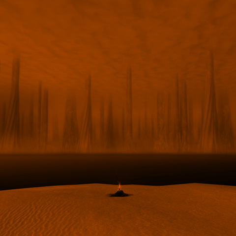
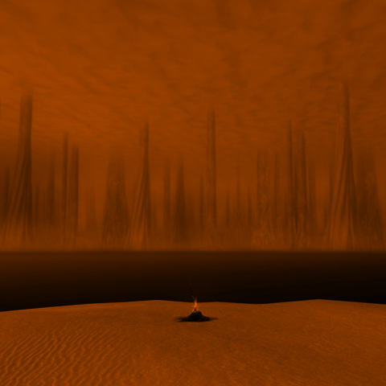
#Theme: UCI
color1 = [254, 204, 7] #gold, from https://brand.uci.edu/identity/colors.php
color2 = [0, 66, 255] #blue, used above link as a reference, then went brighter, more saturated
UCI_gradient = duotone_gradient(color1, color2)
display(Image.fromarray(UCI_gradient.reshape(16,16,3)))
UCI_filter = gradient_filter(D, UCI_gradient)
Image.fromarray(UCI_filter)
 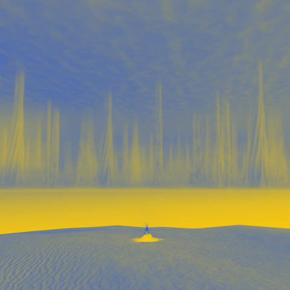
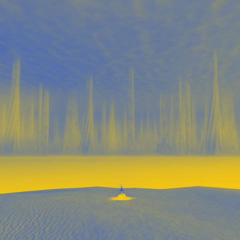
#Theme: ADA Family
color1 = [139, 196, 26]
color2 = [143, 7, 109]
your_gradient = duotone_gradient(color1, color2)
display(Image.fromarray(your_gradient.reshape(16,16,3)))
your_filter = gradient_filter(D, your_gradient)
Image.fromarray(your_filter)


#Theme: Pick your own colors, all you need are the RGB values: https://www.google.com/search?q=rgb+color+picker
color1 = [100, 100, 80]
color2 = [220, 175, 0]
your_gradient = duotone_gradient(color1, color2)
display(Image.fromarray(your_gradient.reshape(16,16,3)))
your_filter = gradient_filter(D, your_gradient)
Image.fromarray(your_filter)
 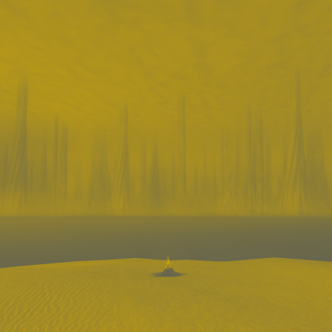
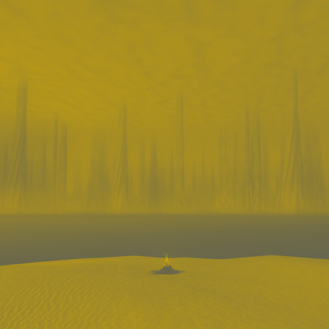
#Theme: Pick your own colors, all you need are the RGB values: https://www.google.com/search?q=rgb+color+picker
color1 = [179, 100, 100]
color2 = [8, 10, 84]
your_gradient = duotone_gradient(color1, color2)
display(Image.fromarray(invert_colors(your_gradient.reshape(16,16,3))))
your_filter = gradient_filter(D, invert_colors(your_gradient))
final_image = Image.fromarray(your_filter)
final_image.save("our_art.png")

Other gradients, and other color replacement#
There’s nothing special about using duotone gradients in the filter above. You can use any other gradient, or any other array of 256 values to determine your image colors.
rainbow_colors = [
[75, 0, 130], # Indigo
[148, 0, 211], # Violet
[255, 0, 0], # Red
[255, 127, 0], # Orange
[255, 255, 0], # Yellow
[0, 255, 0], # Green
[0, 0, 255] # Blue
]
rainbow_gradient = np.zeros((258, 3)) #43*6 = 258. Needed because 43 does not divide evenly into 256, but it divides evenly into 258
for h in range(6):
for i in range(3):
rainbow_gradient[43*h:43*(h+1), i] = np.linspace(rainbow_colors[h][i], rainbow_colors[h+1][i], 43) #43*6 = 258
rainbow_gradient = np.uint8(rainbow_gradient[:256]) #clip the extra two colors from the end of this image, to get 256 colors and not 258.
display(Image.fromarray(rainbow_gradient.reshape(16,16,3)))
rainbow_filter = gradient_filter(D, rainbow_gradient)
Image.fromarray(rainbow_filter)


rainbow_colors = [
[0, 0, 255], # Blue
[75, 0, 130], # Indigo
[148, 0, 211], # Violet
[255, 0, 0], # Red
[255, 127, 0], # Orange
[255, 255, 0], # Yellow
[0, 255, 0], # Green
]
rainbow_gradient = np.zeros((258, 3)) #43*6 = 258. Needed because 43 does not divide evenly into 256, but it divides evenly into 258
for h in range(6):
for i in range(3):
rainbow_gradient[43*h:43*(h+1), i] = np.linspace(rainbow_colors[h][i], rainbow_colors[h+1][i], 43) #43*6 = 258
rainbow_gradient = np.uint8(rainbow_gradient[:256]) #clip the extra two colors from the end of this image, to get 256 colors and not 258.
display(Image.fromarray(rainbow_gradient.reshape(16,16,3)))
rainbow_filter = gradient_filter(D, rainbow_gradient)
Image.fromarray(rainbow_filter)
rainbow_transpose_gradient = rainbow_gradient.copy().reshape(16,16,3).transpose((1,0,2))
display(Image.fromarray(rainbow_transpose_gradient))
rainbow_transpose_gradient = rainbow_transpose_gradient.reshape(256,3)
rainbow_transpose_filter = gradient_filter(D, rainbow_transpose_gradient)
Image.fromarray(rainbow_transpose_filter)


display(Image.fromarray(Creamsicle_gradient[:144:-1,::-1].reshape(1,-1,3)))
display(Image.fromarray(Creamsicle_gradient[144::-1,::].reshape(1,-1,3)))
for split in range(80,152,8):
Combo_gradient = np.concatenate((Creamsicle_gradient[:split:-1,::-1], Creamsicle_gradient[split::-1,::]))
display(Image.fromarray(Combo_gradient.reshape(16,16,3)))
Combo_filter = gradient_filter(D, Combo_gradient)
display(Image.fromarray(Combo_filter))
 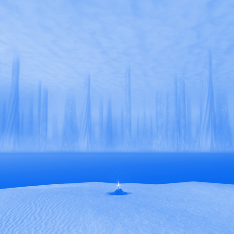
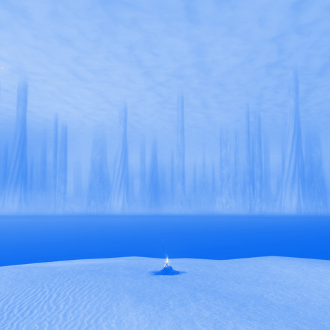

 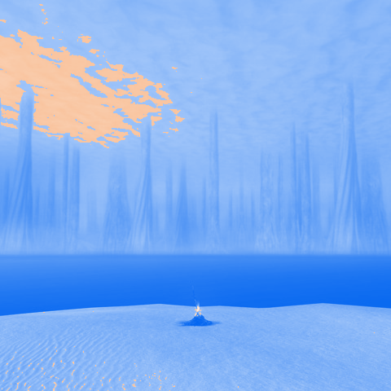
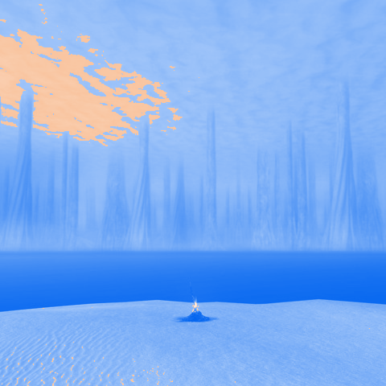


 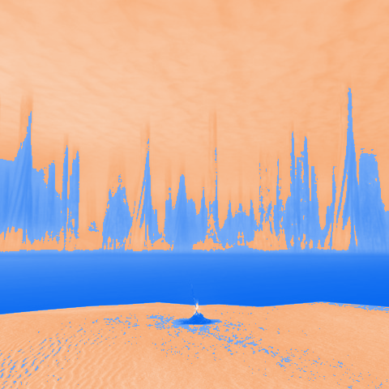
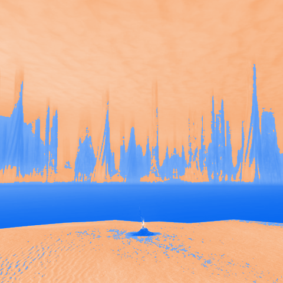


custom_gradient_image = Image.open("Custom gradient.png")
display(custom_gradient_image)
custom_gradient = np.asarray(custom_gradient_image) #for some reason, this image has 4 channels, rgba, with "a" standing for "alpha"
print(custom_gradient.shape)
custom_gradient = custom_gradient[:,:,:3]
print(custom_gradient.shape)
custom_filter = gradient_filter(D, custom_gradient.reshape(256,3))
Image.fromarray(custom_filter)
(16, 16, 4)
(16, 16, 3)

White Noise, Colorful Noise#
import numpy as np
from PIL import Image
import os
rng = np.random.default_rng()
R = rng.integers(0,255,[100,700])
Image.fromarray(np.uint8(R))

R_color = rng.integers(0,255,[100,700,3])
Image.fromarray(np.uint8(R_color))
We can blend noise into our images by taking a weighted average our image and a noise image.
img = Image.open("ash-lake.png")
arr = np.asarray(img)
weighted_average = lambda weight, arr1, arr2: Image.fromarray(np.uint8((1-weight)*arr1 + weight*arr2))
def invert_colors(arr):
B = arr.copy()
B = 255 - B
return B
def channel_swap(arr, swap):
B = arr.copy()
B[:,:,0] = arr[:,:,swap[0]]
B[:,:,1] = arr[:,:,swap[1]]
B[:,:,2] = arr[:,:,swap[2]]
return B
def adjust_lighting(arr, c):
L = np.float64(arr.copy())
L = c*L
L[L > 255] = 255
return np.uint8(L)
B_rb_inv = invert_colors(channel_swap(arr, [2,1,0]))
R2 = rng.integers(0,255,(480,480,1))
weighted_average(0.3, B_rb_inv, R2) #Weight the two images together, like in the example earlier in this notebook.
R_color2 = rng.integers(0,255,arr.shape) #get the size of the random array from the image array
weighted_average(0.3, B_rb_inv, R_color2) #Weight the two images together, like in the example earlier in this notebook.
More blending modes#
These blend modes are found in common photo editing software. Reference: Blend modes - Wikipedia
Lighten Only:#
Across each individual pixel and color channel, take the maximum. Brighter colors have higher numbers
lighten_only = lambda arr1, arr2: Image.fromarray(np.uint8(np.maximum(arr1, arr2)))
#Note: np.maximum is different from np.max!
#np.maximum compares 2 arrays component-wise and returns the largest values
#np.max finds the single largest element in one array (or along an axis, depending on your inputs)
display(lighten_only(R2, B_rb_inv))
display(lighten_only(R_color2, B_rb_inv))
 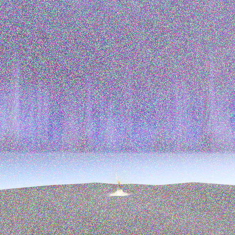
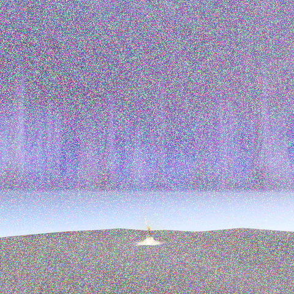
Darken Only:#
Across each individual pixel and color channel, take the minimum. Darker colors have smaller numbers
darken_only = lambda arr1, arr2: Image.fromarray(np.uint8(np.minimum(arr1, arr2)))
#Similarly, np.minimum is different from np.min!
#np.minimum compares 2 arrays component-wise and returns the smallest values
#np.min finds the single smallest element in one array (or along an axis, depending on your inputs)
display(darken_only(R2, B_rb_inv))
display(darken_only(R_color2, B_rb_inv))


s = os.path.join("images",'Cloud.png')
print(s)
img = Image.open(s)
arr_c = np.zeros((480,480,3))
arr_c[:,:,:] = np.asarray(img).reshape(480,480,1)
display(img)
images\Cloud.png

display(darken_only(adjust_lighting(arr_c, 5), B_rb_inv))
display(darken_only(adjust_lighting(arr_c, 5), sepia_filter(B_rb_inv)))
 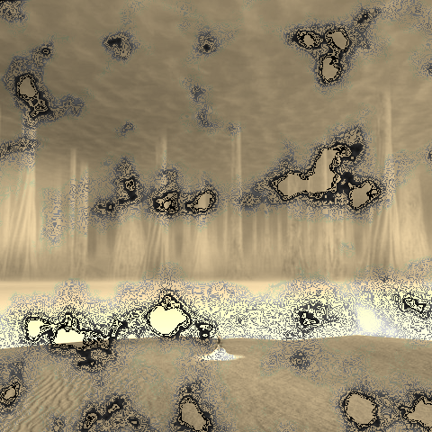
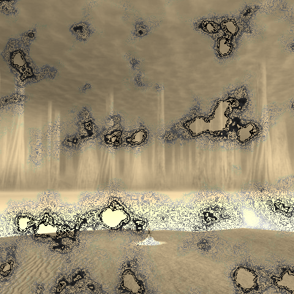
(Absolute) Difference:#
Subtract one image from the other, and then take the absolute value
abs_diff = lambda arr1, arr2: Image.fromarray(np.uint8(np.abs(np.float64(arr1) - np.float64(arr2))))
weight = 0.4
abs_diff(B_rb_inv, weight*arr_c)

weight = 0.5
display((abs_diff(adjust_lighting(arr_c, 5), invert_colors(sepia_filter(B_rb_inv)))))

Color Dodge:#
def color_dodge(arr1, arr2):
arr_cd = (255*np.float64(arr1))/(255 - np.float64(arr2))
arr_cd[arr_cd > 255] = 255
arr_cd[arr_cd < 0] = 0
return np.uint8(arr_cd)
weight = 0.4 #lower the intensity of the noise
B_cd = color_dodge(B_rb_inv, weight*R_color2)
Image.fromarray(B_cd)

Color Burn:#
def color_burn(arr1,arr2):
arr_cb = 1- (255 - np.float64(arr1))/(np.float64(arr2))
arr_cb *= 255
arr_cb[arr_cb > 255] = 255
arr_cb[arr_cb < 0] = 0
return np.uint8(arr_cb)
weight = 0.7 #lower the intensity of the noise
B_cb = color_burn(B_rb_inv, weight*R_color2)
Image.fromarray(B_cb)
C:\Users\lukea\AppData\Local\Temp\ipykernel_11724\4237971857.py:2: RuntimeWarning: divide by zero encountered in divide
arr_cb = 1- (255 - np.float64(arr1))/(np.float64(arr2))
C:\Users\lukea\AppData\Local\Temp\ipykernel_11724\4237971857.py:2: RuntimeWarning: invalid value encountered in divide
arr_cb = 1- (255 - np.float64(arr1))/(np.float64(arr2))
C:\Users\lukea\AppData\Local\Temp\ipykernel_11724\4237971857.py:6: RuntimeWarning: invalid value encountered in cast
return np.uint8(arr_cb)

weight = 1.25
B_cb2 = color_burn(B_rb_inv, weight*arr_c)
Image.fromarray(B_cb2)
C:\Users\lukea\AppData\Local\Temp\ipykernel_11724\4237971857.py:2: RuntimeWarning: divide by zero encountered in divide
arr_cb = 1- (255 - np.float64(arr1))/(np.float64(arr2))
C:\Users\lukea\AppData\Local\Temp\ipykernel_11724\4237971857.py:2: RuntimeWarning: invalid value encountered in divide
arr_cb = 1- (255 - np.float64(arr1))/(np.float64(arr2))
C:\Users\lukea\AppData\Local\Temp\ipykernel_11724\4237971857.py:6: RuntimeWarning: invalid value encountered in cast
return np.uint8(arr_cb)

Combine gradient filters with blend modes#
R_creamsicle = gradient_filter(np.uint8(R_color2), Creamsicle_gradient)
Image.fromarray(R_creamsicle)
display(darken_only(R_creamsicle, B_rb_inv))
weight = 0.75
display(abs_diff(B_rb_inv, weight*R_creamsicle))


weights = [0.5, 0.75]
for w in weights:
display(Image.fromarray(color_burn(B_rb_inv, w*R_creamsicle)))
 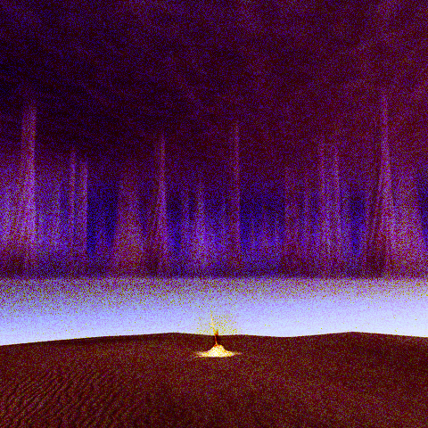
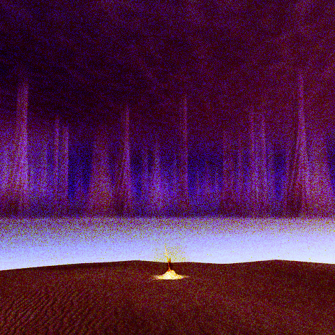
arr_c_creamsicle = gradient_filter(np.uint8(arr_c), Creamsicle_gradient)
display(Image.fromarray(arr_c_creamsicle))
arr_c_UCI = gradient_filter(np.uint8(arr_c), UCI_gradient)
display(Image.fromarray(arr_c_UCI))


display(abs_diff(B_rb_inv, 0.66*arr_c_creamsicle))
display(abs_diff(B_rb_inv, 0.6*arr_c_UCI))


weights = [0.5, 0.75]
for w in weights:
display(Image.fromarray(color_burn(B_rb_inv, w*arr_c_creamsicle)))
 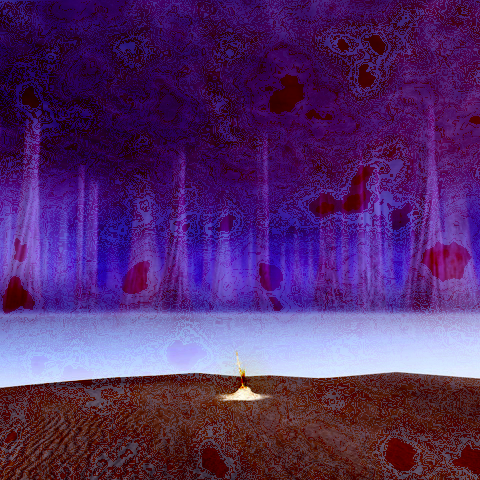
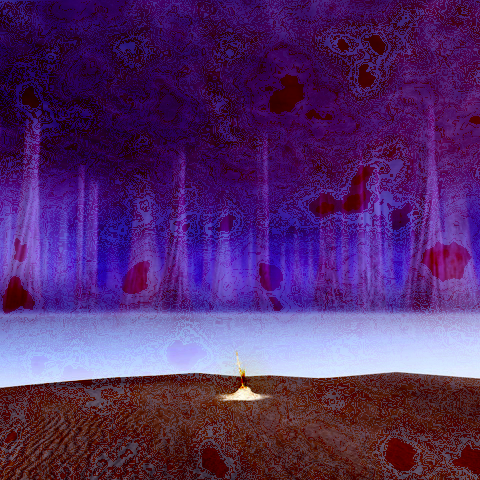
More photo manipulation effects#
Many photo manipulation and image generation effects can be readily broadcast across the array of an image, pixel-by-pixel. Some of the above techniques are used directly by Photoshop.
Many more techniques rely on the pixels surrounding the individual pixel, such as blurring an image, sharpening an image, or edge detection. Hints for these ideas can be found in Math 10 (an old Summer 2022 homework assignment) .